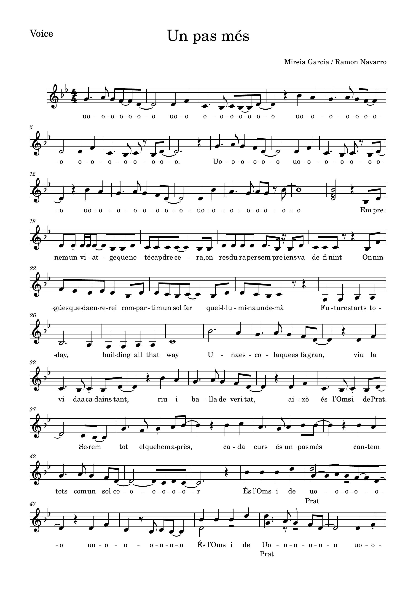
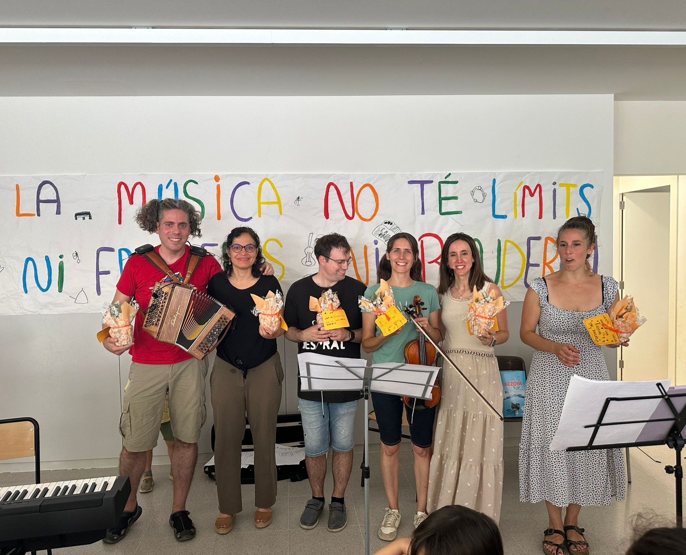
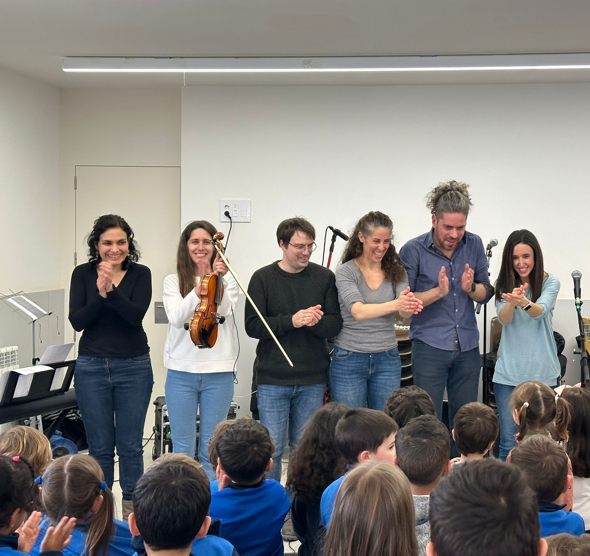

Cançó creada per a l'Escola Oms i de Prat (Manresa)
"Patim, patam... patum" neix d'un grup de pares i mares de l'Escola Oms i de Prat (Manresa) que porten uns anys tocant junts i compartint la seva passió per la música amb espectacles de nadales, cançons infantils i contes. Aquest cop, s'han animat a escriure una lletra i enregistrar una cançó pensada per tots els nens i nenes de l'escola. Esperem que us agradi.
Un pas més és una cançó que celebra la perseverança i la superació. Amb un ritme contagiós i lletres inspiradores, aquesta peça convida a tots a seguir endavant, malgrat els obstacles.


